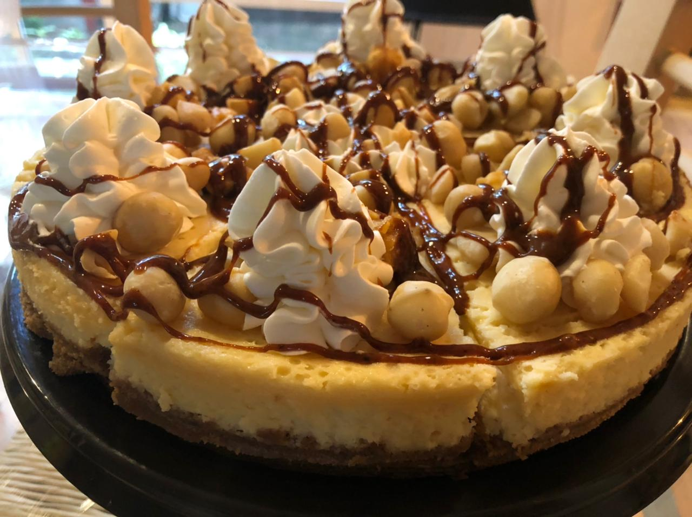

|  |
Keezkeik son nuestros cheesecakes, pueden ser horneados como el de pera, que comenzó con este negocio, incluso el de chocolate con nuez de macadamia y caramelo es horneado,también hay fríos como el de mango o el de galleta oreo. |
Los cheesecakes nos requieren más tiempo de trabajo, si estás pensando en pedir uno, asegurate de pedirlo con tres a cinco días de anticipación como mínimo, para asegurarte un buen producto. |
Aquí también encuentras nuestras tartas de frutos y los mostachones que te podemos hacer casi con cualquier fruta. |